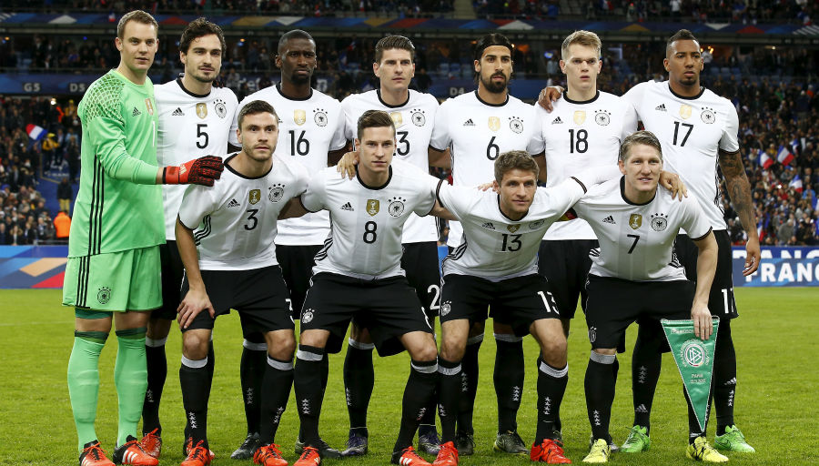

A Alemanha/República Federal da Alemanha participou em todas as edições do
EURO desde 1972. A República Federal da Alemanha venceu as edições de 1972 e 1980, enquanto
a
Alemanha reunificada triunfou no EURO '96.

TÍTULOS
Ao longo de sua história, a UEFA já organizou 17 edições da Eurocopa. Na
lista atualizada de campeões, Alemanha e Espanha lideram com três títulos cada, seguidas pela
Itália, que conquistou dois títulos, incluindo o mais recente em 2020.
MELHORES MOMENTOS
A Alemanha foi eliminada nesta sexta-feira 5 de jul. de 2024 da Eurocopa ao perder por
2 a 1 para a Espanha, pelas quartas de final da competição. A derrota alemã decretou a
aposentadoria oficial de Toni Kroos do futebol.